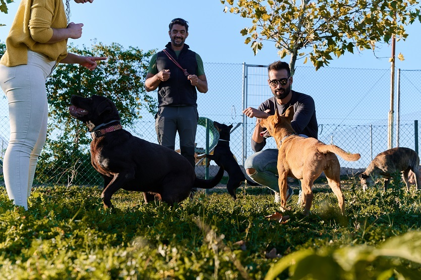

Articles
The Benefits of Dog Playdates: Fostering Canine Well-being
Dogs, known for their loyal and social nature, thrive in environments that allow them to interact with fellow furry companions. Dog playdates, organised gatherings where dogs can engage in social activities, offer a plethora of advantages for both the dogs and their owners. Here, we explore the benefits of incorporating regular playdates into your canine's routine.
- Socialisation: Dogs are inherently social animals, and playdates provide invaluable opportunities for them to refine their social skills. Regular interaction with other dogs helps reduce the risk of behavioural issues, fostering a well-rounded and sociable pet.
- Physical Exercise: Engaging in playful activities during dog playdates ensures that your furry friend gets the physical exercise essential for maintaining overall health. Regular exercise contributes to weight management and cardiovascular well-being.
- Mental Stimulation: Interacting with their canine counterparts during playdates stimulates dogs mentally. This mental enrichment is crucial for preventing boredom and promoting cognitive health.
- Behavioural Development: Dogs learn from each other, especially during play. Playdates can positively influence behaviour, teaching valuable lessons in sharing, communication, and problem-solving.
- Stress Reduction: Just as in humans, stress is a concern for dogs. Playdates offer a stress-free environment where dogs can relax, socialise, and engage in activities that contribute to lower anxiety levels.
- Bonding for Owners: Dog playdates not only benefit the dogs but also provide an opportunity for owners to connect, share experiences, and build a sense of community. The shared joy of watching furry friends play fosters camaraderie among dog owners.
- Observation of Play Styles: Owners can use playdates to observe their dog's play style and interactions. This insight helps identify any potential issues, preferences, or adjustments needed in the play environment.
- Energy Release: Energetic breeds, in particular, benefit from playdates as they offer a controlled space for releasing excess energy. This can reduce the likelihood of dogs exhibiting destructive behaviours at home.
- Improved Training Opportunities: Dog playdates provide a controlled setting for practising commands and training techniques amidst distractions, contributing to better obedience and responsiveness.
- Overall Happiness: Ultimately, positive interactions with fellow dogs contribute significantly to a dog's overall happiness and well-being. A happy dog is more likely to exhibit positive behaviours and live a fulfilling life. Incorporating dog playdates into your dog's routine requires careful consideration, ensuring compatibility in terms of size, temperament, and play style among participating dogs. A well-organized and supervised playdate can be a delightful experience for both dogs and their owners, fostering a sense of community and contributing to the overall well-being of our beloved canine companions.